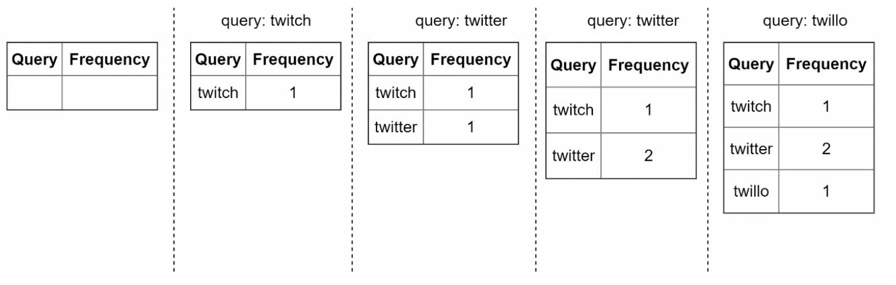
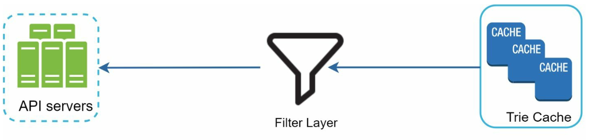
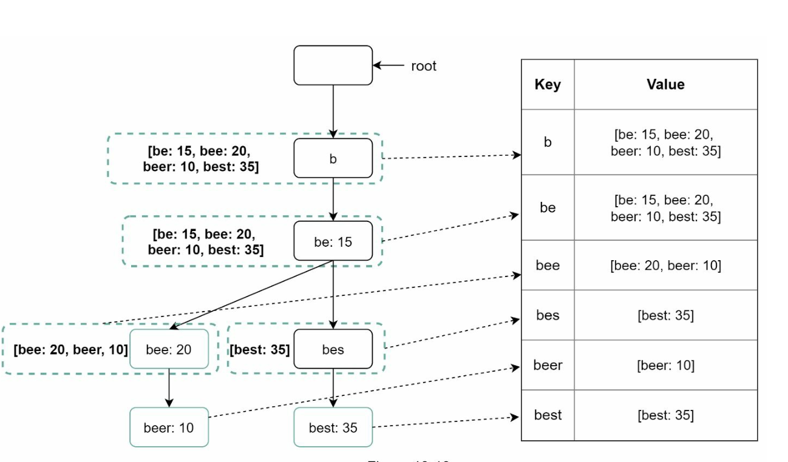
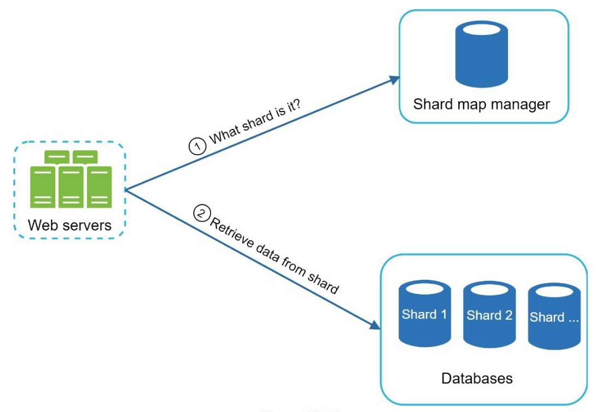

Chapter 13: Design a Search Autocomplete System
Introduction
Autocomplete, also known as typeahead or incremental search, provides real-time suggestions to users as they type in search boxes. The system must efficiently deliver top-k relevant and popular suggestions based on historical query data.
Key Features
- Suggest up to 5 autocomplete results.
- Based on query popularity (frequency).
- Support only lowercase English characters.
- Fast response time (<100 ms) and scalable.
Step 1: Understanding the Problem
Requirements
1. Real-Time Suggestions: Display relevant matches as the user types.
2. Top-k Results: Return up to 5 results sorted by popularity.
3. Scalability: Handle 10 million DAU with a peak QPS of 48,000.
4. High Availability: Handle failures without system downtime.
5. Data Growth: Support daily storage growth of 0.4 GB for new query data.
Step 2: High-Level Design
At the high-level, the system is broken down into two services:
1. Data Gathering Service:
- Collects user queries and aggregates them for frequency analysis in real-time.
- Real-time processing is not practical for large data sets; however, it is a good starting point
2. Query Service: Provides the top-k suggestions based on the user’s input.
Data Gathering Service

- Aggregates query data from analytics logs and updates the frequency table.
- Processes historical data weekly to build a trie (prefix tree).
Query Service


- Uses the frequency table from data gathering service.
- Processes user input and retrieves top-k suggestions from the frequency table using a Trie.
- Optimized for fast lookups using caching and efficient data structures.
- For example when a user types “tw” in the search box, the following top 5 searched queries are displayed.
Step 3: Design Deep Dive
Trie Data Structure
The trie is a tree-like data structure used to store and retrieve query strings efficiently.
Key Features
1. Compact Storage: Represents prefixes hierarchically to minimize redundancy.
2. Frequency Information: Stores the popularity of queries at each node.
4. Steps to get top k most searched queries

- Find the prefix
- Traverse the subtree from prefix node to get all valid children
- Sort the children and get top k
3. Optimizations:
- Cache top-k queries at each node to speed up retrieval and avoid traversing the whole trie.

- Limit prefix length to reduce search space as users rarely type a loong search query (say 50).
Trie Operations
1. Create:
- Built weekly using aggregated query data.
- The source of data is from Analytics Log/DB.
2. Update: Rarely updated in real-time; weekly updates replace old data.
3. Delete:

- Filters remove unwanted or harmful suggestions (e.g., hate speech).
- Having a filter layer gives us the flexibility of removing results based on different filter rules.
- Unwanted suggestions are removed physically from the database asynchronically.
Query Processing Flow
1. Prefix Search:
- Identify the prefix node corresponding to the user’s input.
- Traverse the subtree to collect valid suggestions.
- Cache top-k suggestions at each node to minimize sorting overhead.
- Construct results using cached data for fast response times.
2. Top-k Sorting:
3. Response Construction:
Optimizations
1. Cache at Each Node:
- Store the top-k queries to avoid redundant traversals.
- Cap prefix length to a small value (e.g., 50 characters) for faster lookups.
- Use lightweight asynchronous requests for real-time responses.
- Save autocomplete results in the browser cache for frequently searched terms.
2. Limit Prefix Length:
3. AJAX Requests:
4. Browser Caching:
Data Gathering Pipeline
In the high-level design, whenever a user types a search query, data is updated in real-time. This appraoch is not practical.
- Users may enter billions of queries per day. Updating the trie on every query is not feasible.
- Top suggestions may not change much one the trie is built.
Updated Design

1. Analytics Logs:
- Stores raw query data as logs for weekly aggregation.
- Logs are append-only and are not indexed
- Process logs into frequency tables, suitable for trie construction.
- For real-time applications such as Twitter, aggregate data in a shorter time interval.
- For other cases, aggregating data less frequently, say once per week is good enough.
- Asynchronous servers rebuild the trie and store it in persistent storage.
- Trie Cache: Trie Cache is a distributed cache system that keeps trie in memory for fast read.
- Trie DB
- Maps prefixes to node data for fast access.
- Every prefix in the trie is mapped to a key in a hash table.
- Data on each trie node is mapped to a value in a hash table.
2. Aggregators:
3. Workers:
4. Storage Options:
1. Document Store (e.g., MongoDB): Since a new trie is built weekly, we can periodically take a snapshot of it, serialize it, and store the serialized data in the database like MongoDB
2. Key-Value Store:

Scalability
1. Sharding:
- Distribute trie nodes across servers based on prefix ranges (e.g.,
a-m,n-z). - Further shard within prefixes to balance uneven distributions (e.g.,
aa-ag,ah-an).
2. Load Balancing:

- Use a shard map manager to route requests to the appropriate server.
Step 4: Advanced Features
Multi-Language Support
1. Unicode Characters: Use Unicode to support non-English languages.
2. Country-Specific Tries: Build separate tries for different countries or regions.
Trending Queries
- Handle real-time events by dynamically updating trie nodes or weighting recent queries more heavily.